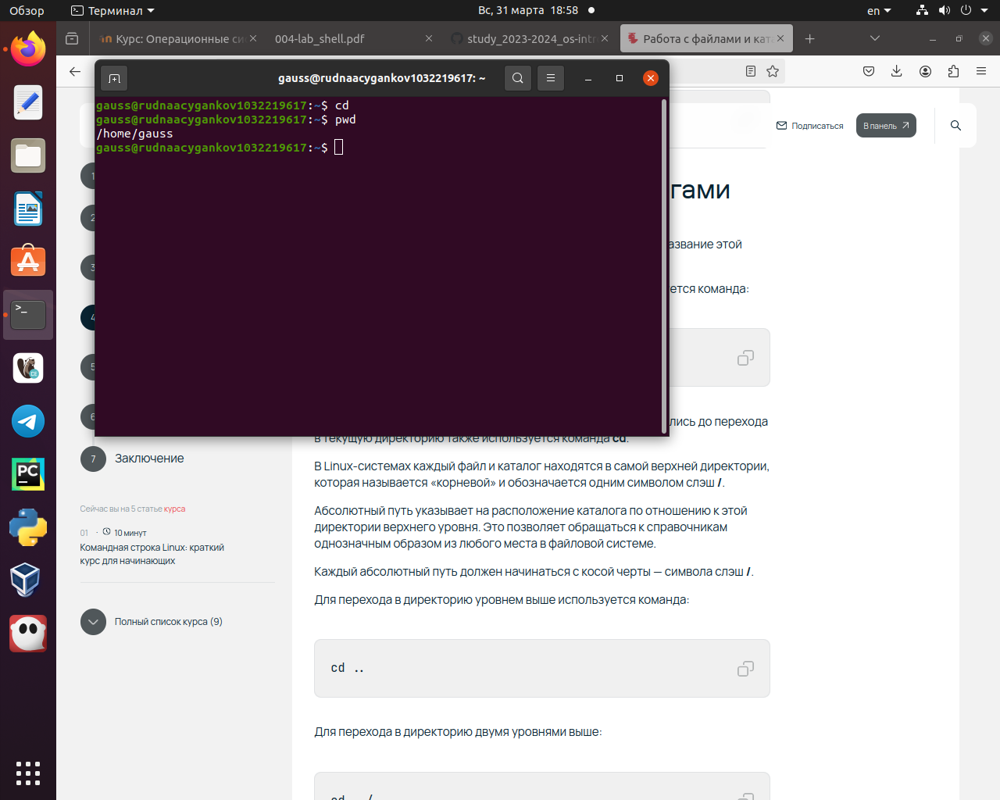
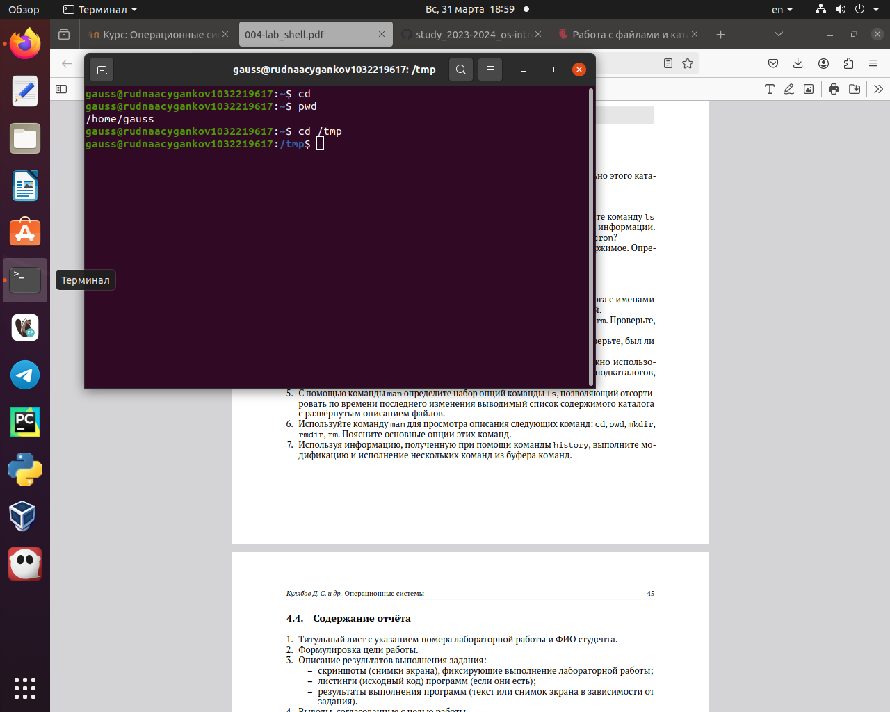
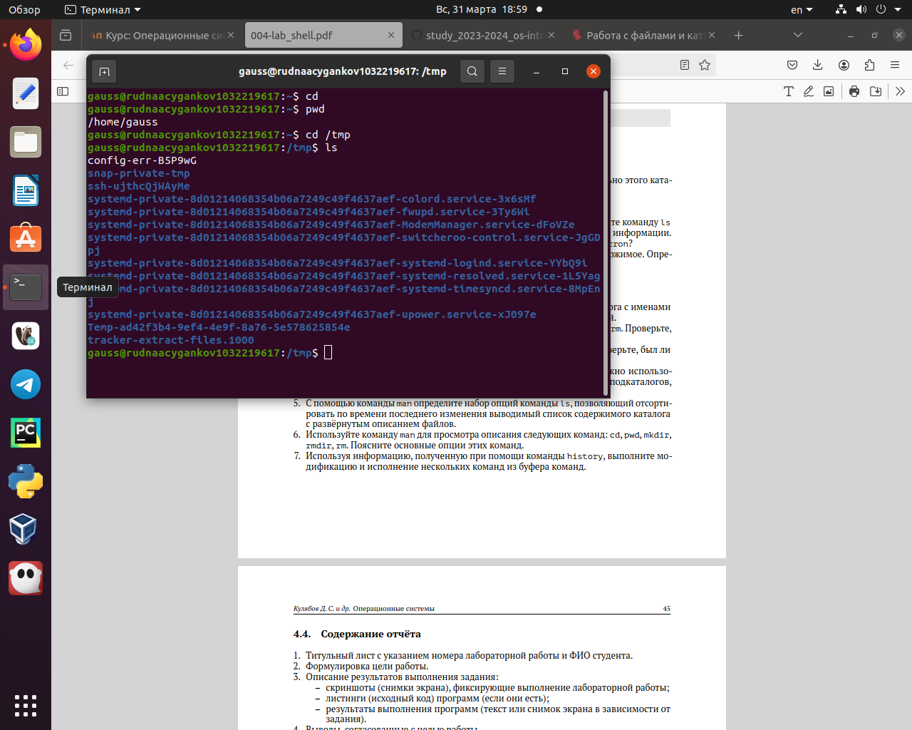
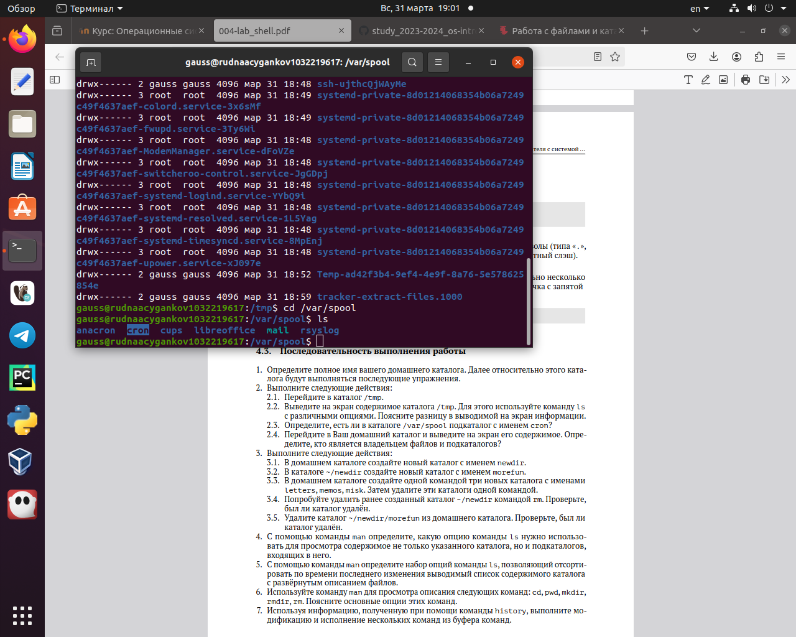
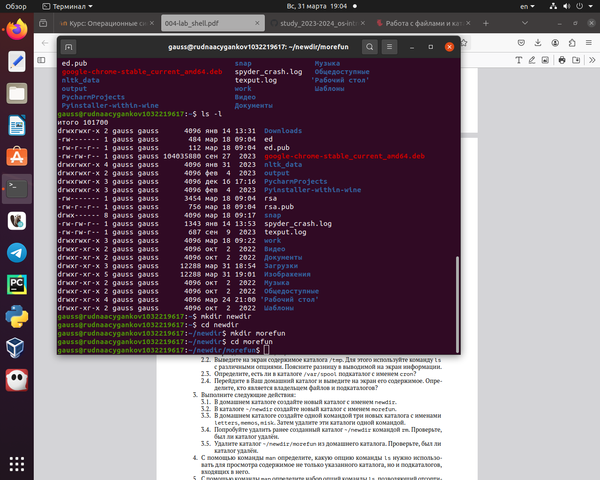
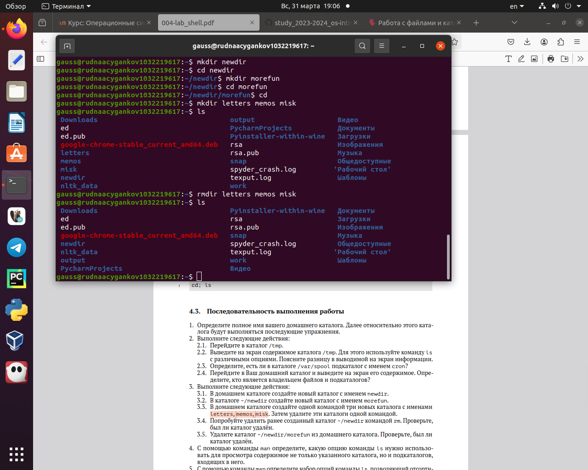
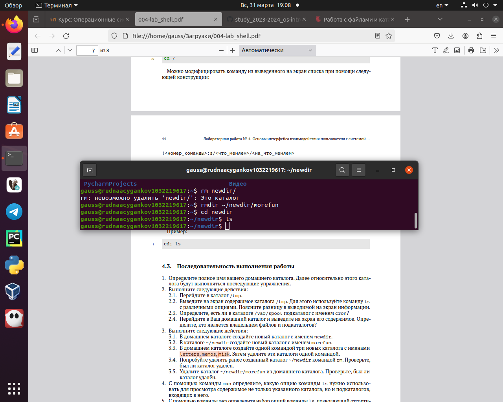
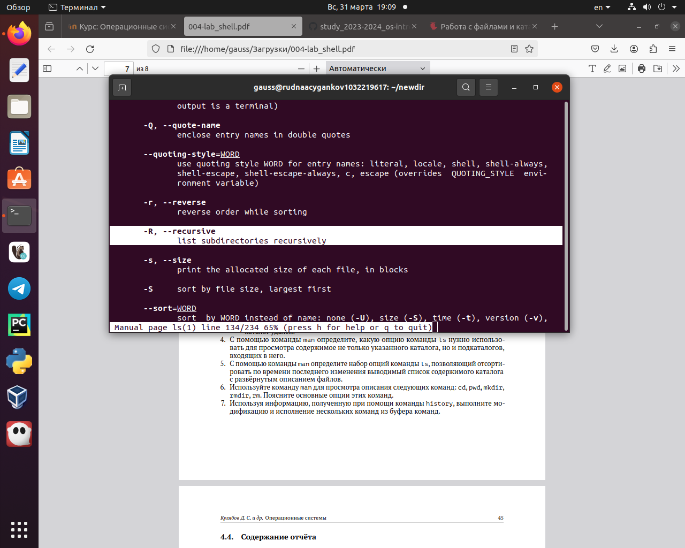
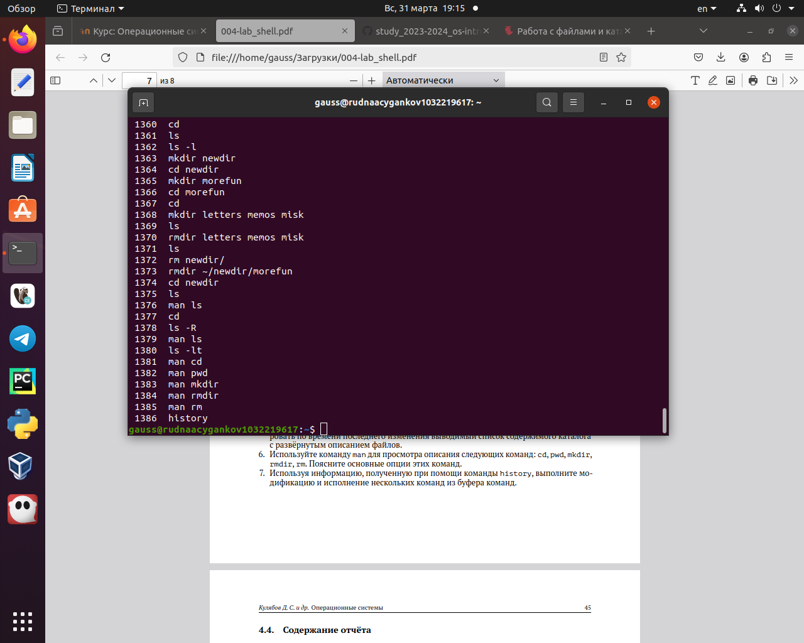
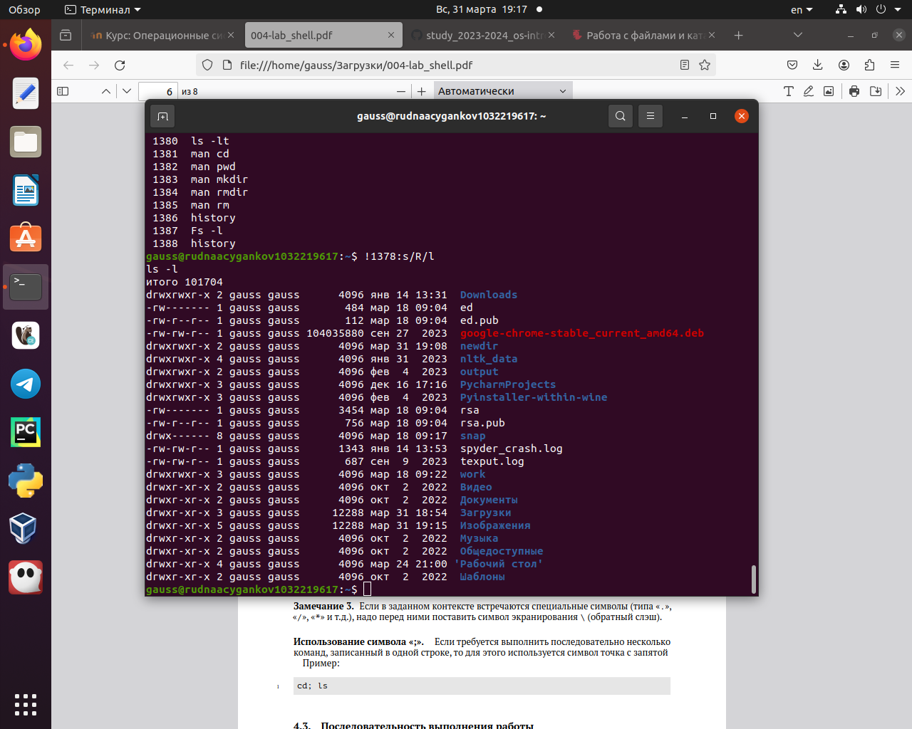

Умение работать с командной строкой - одна из основных задач при освоении любой операционной системы.
Объект и предмет исследования
Система Unix, командная строка.
Цели и задачи
Научиться работать с системой Unix на уровне командной строки
Выполнение заданий.
Определить полное имя домашнего каталога
pwd. Определение имени домашнего каталога.
Переход в каталог /tmp
Каталог /tmp
Вывод на экран содержимого каталога /tmp
ls
Есть ли в каталоге /var/spool подкаталог с именем cron?
с помощью ls
В домашнем каталоге создать новый каталог с именем newdir
newdir
В домашнем каталоге создать одной командой три новых каталога с именами letters, memos, misk. Затем удалить эти каталоги одной командой
Создание
Попробовать удалить ранее созданный каталог ~/newdir командой rm. Проверить, был ли каталог удалён
Попытка. rm -r только удалит каталог
С помощью команды man определить, какую опцию команды ls нужно использовать для просмотра содержимого не только указанного каталога, но и подкаталогов, входящих в него
ls - информация
Используя информацию, полученную при помощи команды history, выполнить модификацию и исполнение нескольких команд из буфера команд
Выполнение команды history
Используя информацию, полученную при помощи команды history, выполнить модификацию и исполнение нескольких команд из буфера команд
Выполнение модификации команды ls
Результаты
Вывод:
В ходе выполнения лабораторной работы я приобрел практические навыки взаимодействия с системой посредством командной строки.